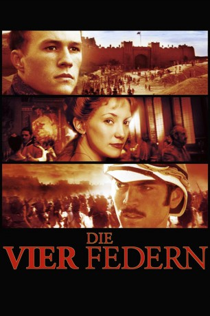

#2058 Die Vier Federn
Alternativ: The Four Feathers
 
 IMDB-Wertung: 6.5 / 10
IMDB-Wertung: 6.5 / 10  Metascore: 49
Metascore: 49 
Als der Offizier Harry Feversham in Afrika im Kolonialkrieg eingesetzt werden soll, quitiert er seinen Dienst bei der Armee. Von drei seiner Freunde und seiner Verlobten bekommt er vier weiße Federn geschenkt – Symbole für Feigheit. Harry verläßt die westliche Welt und lebt fortan bei den Einheimischen in die Wüste. Trotzdem will er seine Ehre wiederherstellen und als Araber getarnt seinen alten Freunden beistehen.
Jahr: 2002
Dauer: 132 Minuten
FSK: 12
Land: England Studio: Concorde FilmverleihTonspuren: DTS - ,
Untertitel:
Auflösung: 1080p (1920x800) Größe: 11980 MB
Genre: Drama, Abenteuer, Krieg, Liebe
Regisseur: Shekhar Kapur
Drehbuch: A.E.W. Mason, Michael Schiffer, Hossein Amini
Soundtrack: James Horner
Darsteller:
 Wes Bentley als Jack Durrance
Wes Bentley als Jack Durrance Daniel Caltagirone als Gustave
Daniel Caltagirone als Gustave James Cosmo als Col. Sutch
James Cosmo als Col. Sutch Lucy Gordon als Isabelle
Lucy Gordon als Isabelle Djimon Hounsou als Abou Fatma
Djimon Hounsou als Abou Fatma Kate Hudson als Ethne Eustace
Kate Hudson als Ethne Eustace Alex Jennings als Colonel Hamilton
Alex Jennings als Colonel Hamilton Heath Ledger als Harry Feversham
Heath Ledger als Harry Feversham- Kris Marshall als Edward Castleton
 Deobia Oparei als Idris-Es-Saier
Deobia Oparei als Idris-Es-Saier Rupert Penry-Jones als Tom Willoughby
Rupert Penry-Jones als Tom Willoughby Tim Pigott-Smith als General Feversham
Tim Pigott-Smith als General Feversham- Laila Rouass als Maya
 Hugh Ross als Regimental Priest
Hugh Ross als Regimental Priest Michael Sheen als William Trench
Michael Sheen als William Trench- Alek Wek als Aquol
- Bruce Lawrence als British Soldier
- Christian Coulson als Drummer Boy , uncredited
 James Embree als British Cavalry Officer , uncredited
James Embree als British Cavalry Officer , uncredited- Natalie Hallam als High Class Lady , uncredited
- Serena Lorien als Crying Widow , uncredited
 Ben Uttley als General Wolseley's Aide-de-Camp , uncredited
Ben Uttley als General Wolseley's Aide-de-Camp , uncredited- Mohamed Bouich als Sudanese Storyteller
- Campbell Brown als Dervish Ansar
- Andy Coumbe als Colonel Other Regiment
 Angela Douglas als Aunt Mary
Angela Douglas als Aunt Mary- Karim Doukkali als Egyptian Orderly
- Megan Hall als Millie
- James Hillier als Drunken Corporal
 Nick Holder als British Lion
Nick Holder als British Lion- Alexandra Kabi als Woman in Red Veil
- Julio Lewis als Saadi
- Craig McDonald als Wounded Captain
- Lionel Mahop als Dervish Captain
- Richard Manlove als British Corporal
- Manar Mohamed als Youssef
- Marouazi Mohammed als Dervish Sniper
- Nider Mohamed als Mullah
- Anna Diafe Ndiaye als Dinka Slavegirl
- Medoune Ndiaye als Gentle Faced Porter
- Mohamen Mehdi Ouazanni als Hassan
- Charles Pemberton als Impressario
- Mohamed Quatib als Ibrahim
- Thioumbe Samb als Dinka Slavegirl
- Mark Tonderai als Egyptian Orderly
- Alex Zorbas als Egyptian Orderly
- Ray Donn als British Cavalry Officer , uncredited
- Hugo Hedley als British Troop , uncredited
- Cassie Newby als Period dancer , uncredited
Datei: X:\2002\Vier Federn, Die (2002, FSK12, 1920x800).mkv seit 29.09.2015
Festplatte: HD 1996-2002
 Es gibt insgesamt 93 Filme in der Gruppe '2002'
Es gibt insgesamt 93 Filme in der Gruppe '2002'